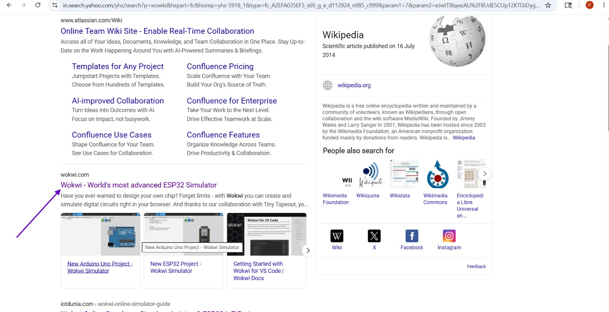
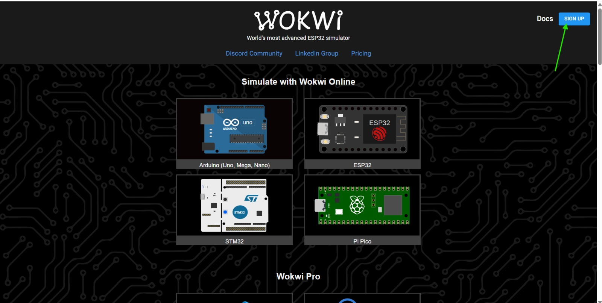
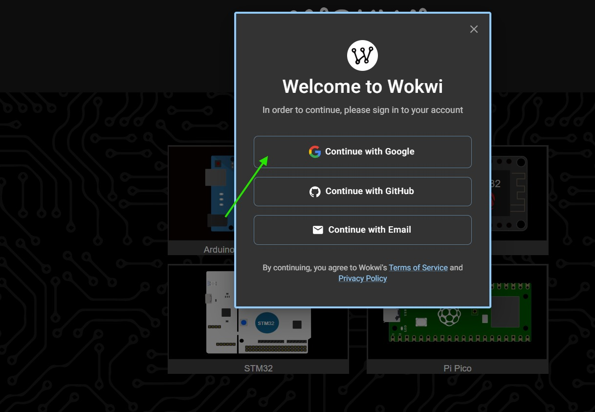
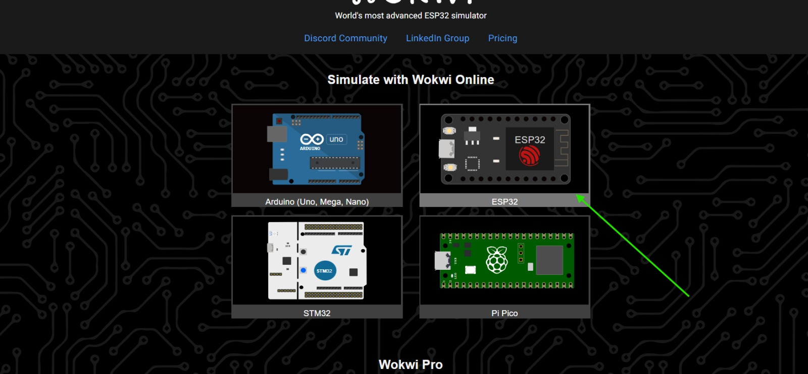
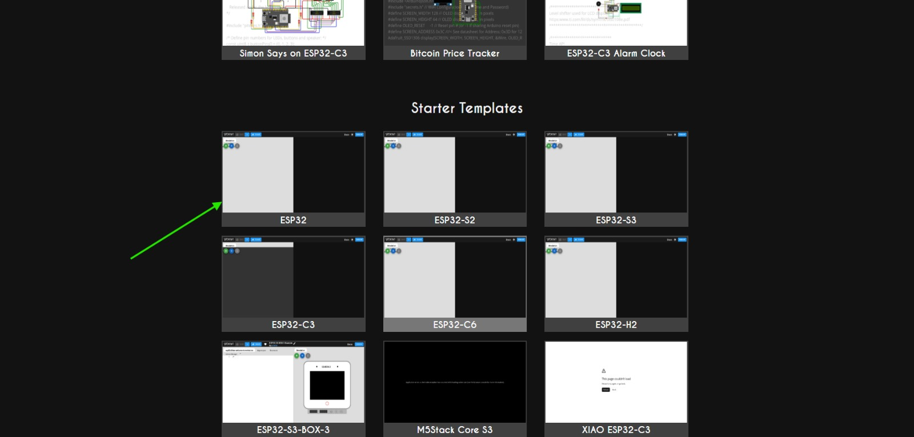
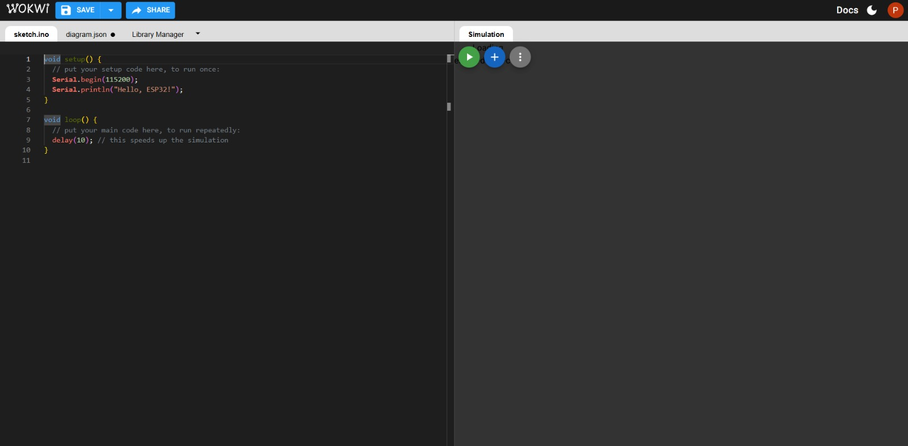
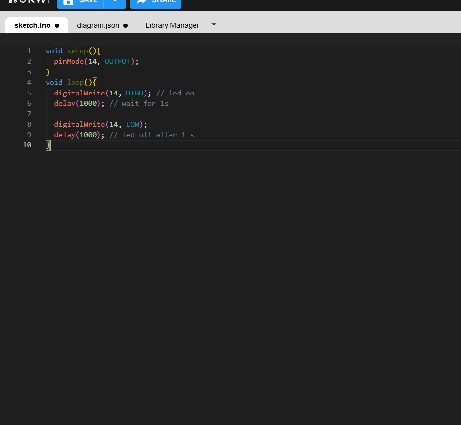
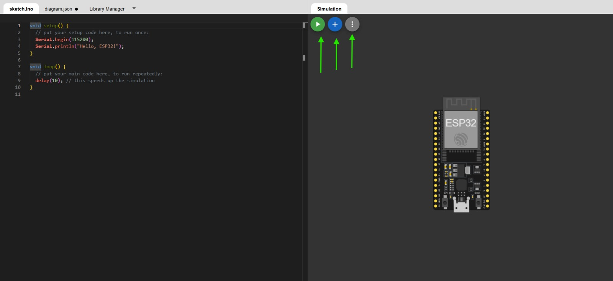
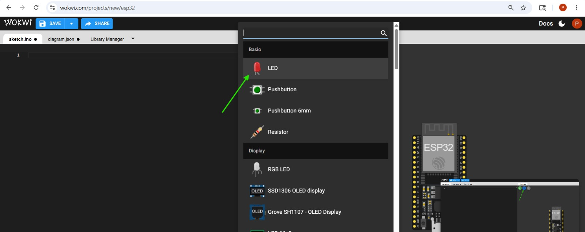
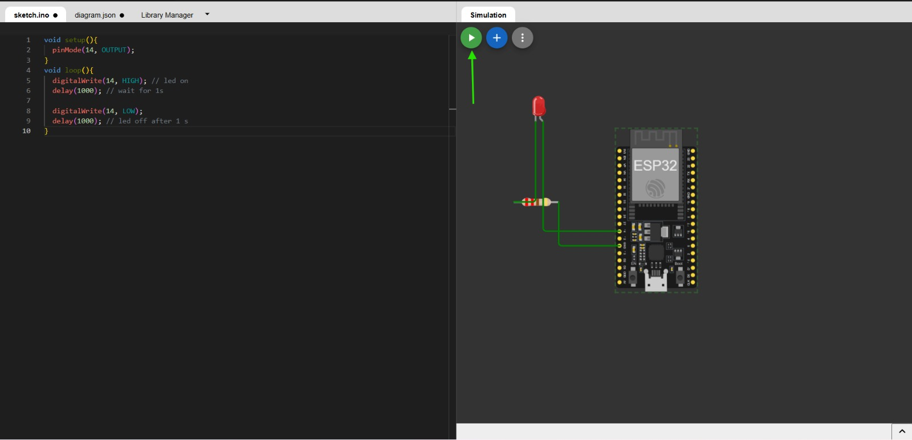

Summer Internship Documentation
← Back to PortfolioTo learn ESP32 simulation using Wokwi, create and test an LED Blink project on GPIO 4, understand virtual circuit design, and document the complete workflow using VS Code and GitHub.
Began the day by exploring Wokwi, the ESP32 simulator. Found it through search results comparing collaboration tools and simulators.

Navigated to the Wokwi homepage and explored available simulation options including Arduino, ESP32, STM32 and Pi Pico.

Signed in using Google/GitHub credentials to save projects and access advanced simulation features.

Selected the ESP32 board and explored available project templates designed for ESP32 development.


Created a new ESP32 project and wrote a simple serial output program to verify simulator functionality.


Added a red LED and resistor to the ESP32 circuit and connected the LED to GPIO pin 4.


Programmed the ESP32 to blink the LED connected to GPIO 4.
void setup(){
pinMode(14, OUTPUT);
}
void loop(){
digitalWrite(14, HIGH);
delay(1000);
digitalWrite(14, LOW);
delay(1000);
}
The program continuously turns the LED ON and OFF every second.
Started the Wokwi simulation and observed the LED blinking successfully every second.

Verified that the circuit and code were working correctly in the virtual environment. This was a crucial step in understanding how ESP32 GPIO pins control external components like LEDs.
Documented the complete workflow in VS Code with screenshots, observations and results. Committed and pushed all files to GitHub for version control.
Recorded the LED blinking simulation as final proof that the ESP32 circuit, code and virtual hardware were working correctly.
| Activity | Learning | Outcome |
|---|---|---|
| Wokwi Setup | Simulator Navigation | ESP32 Environment Ready |
| ESP32 Board | Virtual Hardware Selection | Project Created |
| LED Circuit | GPIO Connections | Working Circuit |
| LED Blink Program | Digital Output Control | LED Blink Successful |
| GitHub Integration | Version Control | Project Published |
Day 5 was a complete cycle of simulation, coding and documentation. Using Wokwi, I built a simple LED Blink project on ESP32 with GPIO 4, understood how output pins work, and verified the circuit virtually. By documenting everything and pushing the work to GitHub, I ensured that the project remains organized, reproducible and collaborative. The screen recording of the LED blink simulation serves as final proof of successful implementation.